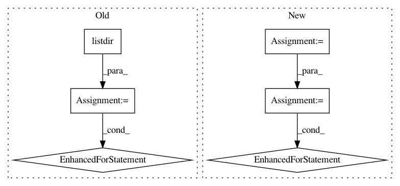

4580ec74800db2a9e4288d49c36c41b1c2077c42,donkeycar/management/tub.py,TubApi,clips_of_tub,#TubApi#Any#,81
Before Change
return os.path.join(tub_path, "record_" + frame_id + ".json")
def clips_of_tub(self, tub_path):
seqs = [ int(f.split("_")[0]) for f in os.listdir(tub_path) if f.endswith(".jpg") ]
seqs.sort()
entries = ((os.stat(self.image_path(tub_path, seq))[ST_ATIME], seq) for seq in seqs)
(last_ts, seq) = next(entries)
clips = [[seq]]
for next_ts, next_seq in entries:
//if next_ts - last_ts > 100: //greater than 1s apart
// clips.append([next_seq])
//else:
// clips[-1].append(next_seq)
clips[-1].append(next_seq)
last_ts = next_ts
return clips
def get(self, tub_id):
clips = self.clips_of_tub(os.path.join(self.data_path, tub_id))
After Change
self.data_path = path.absolute()
def clips_of_tub(self, tub_path):
tub = Tub(tub_path)
clips = []
for record in tub:
index = record["_index"]
images_relative_path = os.path.join(Tub.images(), record["cam/image_array"])
record["cam/image_array"] = images_relative_path
clips.append(record)
return [clips]
def get(self, tub_id):
base_path = os.path.join(self.data_path, tub_id)
In pattern: SUPERPATTERN
Frequency: 5
Non-data size: 6
Instances
Project Name: autorope/donkeycar
Commit Name: 4580ec74800db2a9e4288d49c36c41b1c2077c42
Time: 2020-10-04
Author: tikurahul@gmail.com
File Name: donkeycar/management/tub.py
Class Name: TubApi
Method Name: clips_of_tub
Project Name: pantsbuild/pants
Commit Name: f9722792792e9dfac0b13d489326f1cc6b162a6f
Time: 2018-01-10
Author: john.sirois@gmail.com
File Name: src/python/pants/java/junit/junit_xml_parser.py
Class Name:
Method Name: parse_failed_targets
Project Name: sony/nnabla
Commit Name: f59fb87d9613da132096e85b60cf6c0a8efc1cf6
Time: 2018-09-24
Author: Yukio.Oobuchi@sony.com
File Name: python/src/nnabla/utils/data_source_implements.py
Class Name: CacheDataSource
Method Name: __init__
Project Name: EducationalTestingService/skll
Commit Name: 2cf07cbc4b9ca699f53ba6e25dd4b828e01788a3
Time: 2019-10-22
Author: nmadnani@ets.org
File Name: tests/test_input.py
Class Name:
Method Name: tearDown
Project Name: tensorflow/datasets
Commit Name: 3404c3e64990dc7290a944313f3dccca54512710
Time: 2019-12-06
Author: c.taneja09@gmail.com
File Name: tensorflow_datasets/image/food101.py
Class Name: Food101
Method Name: _generate_examples